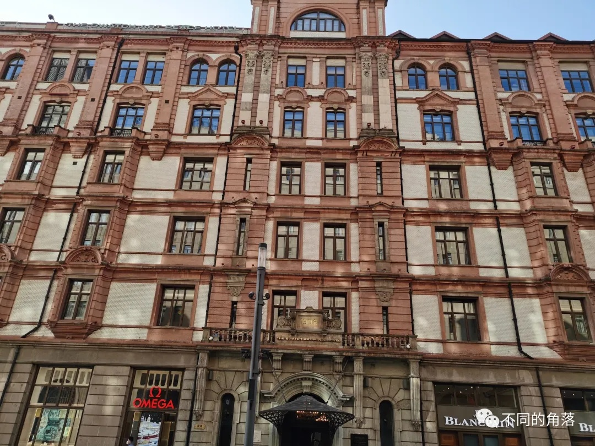
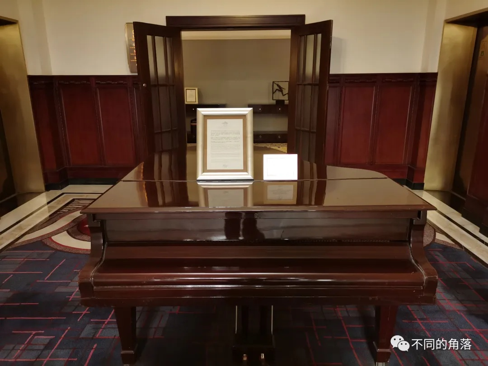
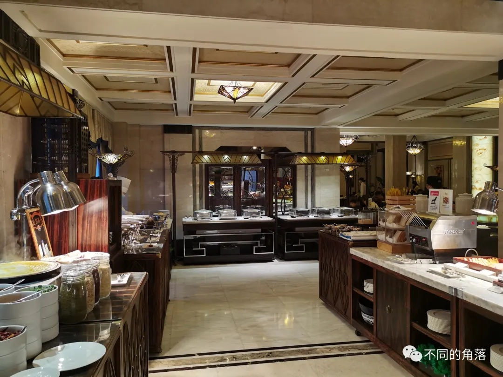

2010年7月28日，历经三年修缮，耗资5亿港元，曾有“远东第一楼”之称的已有80多年历史的上海滩标志性建筑和平饭店北楼（原华懋饭店）正式恢复营业，继续沿用和平饭店名称。 2011年11月11日，重新装修后的和平饭店南楼（原汇中饭店）改为斯沃琪和平饭店艺术中心对外开放。
汇中饭店时期：
1854年，英国人帕克沃在上海外滩建造了一座带有阳台的3层楼的旅馆，因为是英国人创办的，所以叫“帝国饭店”，是当时上海最豪华的旅馆。 1865年4月3日，汇丰银行的上海分行成立，租用该处营业，直到1874年。 1875年，新成立的中央商店有限公司买下此处房产，改名中央饭店营业。 1903年，英商汇中洋行买下饭店产权后改名为汇中饭店。 1906年，汇中饭店拆除重建，请英资玛礼逊洋行的司各特设计，华商王发记营造厂承建，计划翻建成6层楼房。 1907年，奥的斯公司在汇中饭店安装了2部电梯，这是是中国最早使用的电梯。 1908年，建成开业，占地面积为2125平方米，建筑面积为11697平方米，砖木混合结构，6层楼，高30米；饭店外观为文艺复兴时期建筑风格，底层为大酒吧间、餐厅和茶室；二至五层为客房共130间，配备有家具、带有瓷砖铺就的浴室和现代化的卫浴设备，供应冷热水，每个单元都有专用电话，大部分客房安装了供冬天使用的热水汀；六层为员工宿舍，屋顶为上海最早的屋顶花园，东西各有一座巴洛克式风格的塔式凉亭，可以在楼顶花园观看外滩全貌和黄浦江景。 1909年，中、美、英、法、德、日、意、奥、葡、荷、俄、波斯（今伊朗）、暹罗（今泰国）等13个国家41名代表在汇中饭店召开世界第一次国际禁毒大会，又叫“万国禁烟大会”。 1911年12月，辛亥革命成功，孙中山赴南京就任中华民国临时大总统，途经上海出席全市各界在汇中饭店为其举行的欢迎大会，孙中山先生发表演说，提出了“革命尚未成功，同志仍需努力”的著名口号。 1914年，六层员工宿舍失火，屋顶花园以及顶层的建筑装饰全部烧毁，不久第一次世界大战爆发，业主顾不上修复，只是简单修理，顶层改作平屋面。 1927年，蒋介石、宋美龄在汇中饭店举行订婚典礼。 1941年，太平洋战争爆发后，汇中饭店被日伪强占。 1945年，抗战胜利汇中洋行又收回汇中饭店的产权。 1952年，汇中饭店歇业，此后长期由上海市建筑工程局等租用。 1965年，汇中饭店并入和平饭店改为和平饭店南楼重新对外营业。
华懋饭店时期：
1845年，维克多·沙逊的曾祖父大卫·沙逊创建的沙逊洋行成为鸦片战争之后，进入上海滩的最早的几个洋行之一，主要从事鸦片贸易和运销棉纺织品。 1872年，维克多·沙逊的祖父伊利亚斯·台维特·沙逊在上海另立门户创办了新沙逊洋行。 1877年10月，新沙逊洋行以 8万两银子买下了旧上海法租界最繁华南京路外滩“何德产业”约11亩8分面积的土地，建起了三层维多利亚府邸式风格的“沙逊姊妹楼”，成为沙逊洋行总部。 1918年，维克多·沙逊在印度孟买继承祖业后掌管了新沙逊洋行，并继承了叔叔雅克布·沙逊的从男爵爵位。 1923年，维克多·沙逊从印度来到上海全面接管新沙逊洋行上海产业，继续发展进出口贸易（鸦片和军火贸易为主）。后期鸦片贸易被全面禁止，逐渐把业务重点转向房地产领域，大规模投资房地产并因此成为了上海滩首富。
1925年维克多·沙逊开始筹划在新沙逊洋行原地翻造高层公寓，并已对设计方案初稿进行了推敲。拟建中的大厦不但面江，而且恰在外滩及其第一马路----南京路构成的“T”形黄金地段关节点上，这里是上海级差地租最高的地块，从开埠之初到20世纪初，地价已翻百倍，并在摩登时代继续快速飙升，当时周边土地均价为每亩20万两白银，而这一地块每亩最高可达45万两白银，并且租金增值空间巨大。因此只租不售的高档酒店成为刺激地产的最新诱惑。 大厦由巴马丹拿建筑设计公司（也叫英国公和洋行）设计，巴马丹拿设计了旧上海外滩差不多近半建筑，从1868年成立到现在，是世界上历史最悠久的建筑事务所。 1926年年初，大厦已按初稿修改后的图纸开始基础施工，但一年后即变更设计，改为以酒店功能为主，于是大厦边施工，边修改设计。
1929年，沙逊大厦建成，楼高77米，共12层，为上海第一幢十层以上的摩天大楼，大厦以东面作为主立面，屋顶为金字塔形，四方攒尖顶，坡度很陡，高19米，用瓦楞紫铜皮饰面，呈墨绿色，高插云霄，十分壮丽雄伟，大厦外部全部用花岗石饰面，由旋转厅门而入，大堂地面用乳白色意大利大理石铺成，顶端古铜镂花吊灯，豪华典雅。 沙逊把从世界各地收集来的珍贵工艺品都带入了这座大楼中，配备了当时属于世界领先科技的空调系统，以及欧洲酒店都尚未启用的室内电话，大厦内有五部奥的斯电梯，可从门厅抵达顶楼。 饭店底层平面呈三横一纵格局，面向南京路共开有三个大门，门外都建有雨棚。大堂有两条交叉通道，一条从外滩进入，一条从南京路至滇池路，中间交会点有一个八角亭内厅，其穹顶有彩色玻璃镶嵌的图案。大厦底层、夹层、一、二层写字间出租给商店、其他洋行、进出口行、国际电台等。 新沙逊洋行及一部分下属公司在三层办公；四至九层为华懋饭店；十层是维克多·沙逊的英国式私人卧室和书房。 因大楼建成后由华懋地产股份有限公司经营，故命名为华懋饭店。 沙逊大厦占地面积4617平方米，建筑面积36317平方米，造价白银2483640两，加上装修及其它设备，共计耗费白银5602813两。 沙逊大厦地块面临南京路和黄浦江，三面沿马路，一向被认为是上海最好的一块土地，工部局估价土地时，这块土地一直都是独占鳌头。 当初进这块土地时的估价为每亩白银6500两，沙逊大厦建成之后的1933年，更飞跃至360000两的高峰。 大厦一经建成，新沙逊洋行的身价迅即蹿升，从20年代中期到30年代中期，短短10年内，维克多·沙逊成为上海最大的房地产投资商。他在南京路、福州路、淮海路、四川路一带繁华地区，买进大批地产、房屋，占有地皮六百多亩，拥有房屋一千九百多幢，几乎占据了整条南京路的房地产。在旧上海二十八幢十层以上的高楼中，他一人独占六幢，为沙逊大厦（现和平饭店），华懋公寓（现锦江饭店北楼），高纳公寓（现锦江饭店中楼），汉弥尔登大厦（现福州大楼），都城饭店（现新城饭店），河滨大楼。
华懋饭店是旧上海的时尚奢侈地标，沙逊建造它目的就是将其打造为能和伦敦的萨沃伊、巴黎丽兹、伦敦丽兹、纽约华尔道夫以及旧上海当时最好的礼查饭店（始建于1846年，是中国最早的西商饭店，1959年改名浦江饭店，2017年底停业，2018年底改造为中国证券博物馆后对外开放）相媲美的豪华饭店。 华懋饭店落成以后，名噪上海，以豪华著称，九国特色套房在上海大饭店中是独一无二的，面临风景如画的黄浦江，以中、英、法、美、德、日、意、西、印九国风格装设，在上海独一无二，有人戏称为联合国度假村。在20世纪的30年代，就有“住在华懋饭店，如同身处世界的中心”的说法，同时沙逊还把欧洲饭店的下午茶引进到华懋饭店。 自1929年开业以来，主要接待金融界，商贸界和各国社会名流，鲁迅、宋庆龄、卓别林以及萧伯纳、马歇尔、司徒雷登都曾是这里的座上客。
1932年10月2日，国际联盟组成了以英国前代理印度总督李顿为团长，率领英、美、法、德、意五国成员的调查团，前往东北调查日本军侵略的情况，并且公布了《国联调查团报告书》（又名《李顿报告书》），工作告一段落后来沪，就入住华懋饭店。 1933年12月，华懋饭店接待过1909年诺贝尔物理学奖获得者，素有“无线电之父”美誉的意大利著名科学家马可尼。 1933年8月，英国马兰爵士秘密访华，就住在华懋饭店，鲁迅曾来华懋饭店拜访马兰。 1936年3月，美国喜剧大师查理·卓别林偕《摩登时代》女主角宝莲·高黛入住 51 特色套房 ( 现为 568 房间 ) 。 1945年12月20日，美国特使马歇尔一行抵沪，下榻于华懋饭店。 1946年美国陆海空军和联合国善后救济总署占用了饭店四、五、六楼的全部房间，美国飞虎队队长陈纳德也常住华懋饭店。 1947年6月16日至25日，首届联合国亚洲暨远东经济委员会在华懋饭店8楼举行，协商战后重建问题。共有中、美、苏、英、印、澳、菲、泰、法、荷等十个国家，约100多名来宾出席会议。著名外交家蒋廷黻出任中国政府首席代表，并担任大会主席。这是二战后首次在中国召开的大型国际会议。
1941年底太平洋战争爆发前，沙逊感到中国的形势越来越不稳定，逐渐地抽调资金到海外，同时陆续出售他在上海的房地产。 1945年抗战胜利后，沙逊继续出售上海的房地产，除了沙逊大厦外其余产业都陆续出售。 1948年4月，沙逊离开上海，新沙逊洋行总部迁往巴哈巴群岛的拿骚，抛售房地产和股票的巨额资金也悉数抽走。 1949年上海解放之后，高消费萎缩，华懋饭店入不敷出，拖欠高额地价税、营业税、水电费及员工薪水，饭店申请歇业。 1952年，沙逊大厦由上海市人民政府接管，以抵所欠债务。华懋饭店改为中共华东局财政委员会办公处，市领导陈毅、潘汉年等都曾在此办公。
和平饭店时期：
1956年春，有一支苏联舰队访问上海，为解决当时涉外旅馆的不足，接待好访沪的苏联海军官兵，市里决定恢复华懋饭店的业务。当时，刚好有一个世界和平会议在北京召开，就议定把华懋饭店改名为和平饭店，隶属于上海市府机关事务管理局。
1956年3月8日，华懋饭店改为和平饭店北楼重新营业，“和平饭店”四个字是潘汉年所题写。 1960年，英国伯纳特·蒙哥马利元帅来华访问，途经上海时入住 72 房间 ( 现为 778 房间 ) 。 1960 年美国记者《西行漫记》作者爱德加·斯诺途经上海时入住 73 房间 ( 现为 788 房间 ) 。 1964年1月周恩来总理在九霄厅会见法国总理埃德加·富尔，几天以后中法宣布建立外交关系。 1965年，汇中饭店并入和平饭店改为和平饭店南楼重新对外营业。 1971年美国乒乓球代表团应邀访问中国，在上海期间入住和平饭店，并在和平厅举行了盛大欢迎宴会。 1975年9月中日邦交恢复后日本驻上海总领事馆在和平饭店六楼开馆。 1984年，上海市锦江联营公司成立，和平饭店划归至锦江。
1994年5月世界拳王穆罕默德·阿里携夫人来沪旅行，曾住 643 房间。 1998年6月30日时任上海市市长徐匡迪夫妇在九霄厅宴请美国总统克林顿及其夫人希拉里。 1998年10月海峡两岸关系协会会长汪道涵和台湾海峡交流基金会董事长辜振甫在和平厅举行“汪辜会谈”。
1964年的日本工业展览会，1965年的中日青年大联欢，1999《财富》论坛上海年会、2001APEC会议、2002亚洲银行理事会年会等活动都在和平饭店举行。 2006年2月，在和平饭店北楼二楼建立了一个小博物馆，展示当年使用过的物品和一众在和平饭店留下足迹的名人黑白照片。
历经三年的大规模修缮后，饭店的外立面、大理石地面、雕花屋顶、大厅中的古铜镂花吊灯等有“和平文化”的经典元素都被悉数保留，而服务质量则进一步升级，成为无可厚非的“世界经典酒店”。 2010年7月28日，已有80多年历史的上海滩标志性建筑和平饭店北楼正式恢复营业。由锦江与费尔蒙（FRHI旗下奢华五星品牌，后FRHI被雅高收购）合资成立的锦江费尔蒙酒店管理有限公司管理至今。 2011年11月11日，和平饭店南楼挂牌斯沃琪和平饭店艺术中心开业。
和平饭店是全国重点文物保护单位，于1991年被国家旅游局评定为四星级饭店，2000年晋升为“五星级饭店”。 1998年，饭店被“世界最著名饭店组织”评为世界著名饭店，这在中国尚属首家。 饭店曾荣获“欧洲之门”国际质量奖、“质量巅峰”铂金奖、“世纪国际质量钻石奖”、“亚洲最佳酒店”称号，蜚声海内外。 位于饭店底层大堂的老年爵士酒吧，因1980年成立的老年爵士乐队六位老乐手每晚演奏而出名，这些老乐手大多数是40年代在老上海著名的百乐门、大都会、仙乐斯和新仙林四大舞厅的乐师，这支老年爵士乐队创造了两项吉尼斯世界纪录：每天演出时间最长和世界最老的乐队。 国内三家最具代表性的老酒店：北京饭店（B座，现北京饭店诺金）、上海和平饭店、天津利顺德大饭店。
二、位置交通
和平饭店（北楼）位于上海市黄埔区南京东路20号（酒店大楼东侧侧楼牌号是中山东一路20号，酒店大楼北侧楼牌号是滇池路20号）酒店南侧马路（南京东路）对面是斯沃琪和平饭店艺术中心（和平饭店南楼），现在对外营业的和平饭店是和平饭店（北楼）。

马路对面的斯沃琪和平饭店艺术中心以下所说和平饭店都是指和平饭店（北楼）。
酒店北侧马路（滇池路）对面是中国银行上海市分行（原德国总会大楼旧址），酒店西侧相连的是和平大厦和平商务楼，再往西就是锦江都城经典南京东路外滩酒店。酒店东侧是中山东一路，酒店东侧的客房才可以看到外滩江景。
酒店周边有多条公交线路，距离南京东路地铁站大约600米，交通出行很方便。距离上海站4公里多，距离上海虹桥站大约20公里，距离上海浦东机场40多公里。三、酒店设施
酒店设施完善，配套设施有健身房、游泳池、SPA水疗中心、商务中心、会议室、金樽费尔蒙酒廊（行政酒廊）、龙凤厅中餐厅、华懋阁西餐厅、爵士酒吧等，9层和顶层有花园露台，但只在夏秋季节才开放。
2楼有一个小博物馆（是真正的小博物馆，太小了）。
四、客房情况
上海和平饭店共有客房270间，有费尔蒙大/双床房、费尔蒙市景大/双床房、费尔蒙金樽大/双床房、费尔蒙套房（89平米）、小黄鸭主题房（89平米）、特色江景套房（178平米）、九国特色江景套房（178平米）、沙逊总统套房（268平米）等多种房型。
总统套房在10层，九国特色江景套房是位于5、6、7层东侧（中山东一路）一侧的江景套房，每层三间。

入住的5层费尔蒙套房，朝北滇池路一侧，马路对面是中国银行上海分行大楼（原德国总会旧址）。 客房面积89平米，客房洗浴备品是Le Labo的Rose31系列，费尔蒙酒店用的都是这种。五、餐饮情况
酒店龙凤厅中餐厅、华懋阁西餐厅、金樽费尔蒙酒廊（行政酒廊）、爵士酒吧、大堂吧等提供餐饮服务。
酒店早上提供自助早餐，在一楼的华懋阁西餐厅，单独购买是259元每人。
华懋阁周日有自助午餐（酒店官方说法是自助早午餐），用餐时间11:30-14:30，最多可用餐2小时，价格728元加15%服务费837.2元每人，美团上价格795.9元。
华懋阁周一至周六有下午茶，茉莉酒廊有周六茶舞&周日下午茶，价格是588元加15%服务费676.2元每人，美团上价格932.4元双人。

早餐的品种丰富，味道也不错。
六、员工服务
遇到的员工服务都不错。
七、综合评价
优点：
1、老建筑，很有历史感，曾经的旧上海酒店头牌，上海滩标志性建筑，现在也是上海排前几名的酒店。
2、入住过程中遇到了一些问题，酒店员工后续的处理还是可以的，对得起费尔蒙管理团队和费尔蒙这个品牌。
不足之处：
1、个别接电话的工作人员感觉脑子不大灵光。
2、送来的洗浴备品里护发素是过期的。
3、安排的第一间房房间里电话机是坏的。
4、安排的第一间房房间里的欢迎水果砂糖桔有4个是烂的。
上海和平饭店象征意义很多，是一个地标，是一段历史，是一种情怀……
整体评价可以给8分。
八、入住建议
1、不要选择费尔蒙大床房/双床床，费尔蒙大床房和费尔蒙双床房都是朝向院内天井的房间，窗外不远就是对面的房间，私密性很差，需要全天拉上窗帘。
2、入住其它房型，建议选择朝向南京东路一侧的客房（朝南），比朝向滇池路一侧的客房（朝北）视野好些，南京东路比滇池路要宽一些，楼间距要大。
3、酒店早餐单独购买259元一份，对比价格感觉不是很值，如果预订的是无早房价，不建议再另付费购买早餐，当然土豪可以忽略。
4、招行高端卡权益预订和平饭店的价格还不错，还都有双早，有招行高端卡的可以考虑用招行高端卡权益预订。
5、非雅高高卡（白金和钻卡）会员建议哪个平台便宜哪里预订。
更多的国内酒店入住体验报告、酒店常识、酒店行业资讯、酒店集团介绍、航空常识、沈阳旅游等相关内容可以到我的微信公众号里查看。
也欢迎大家关注我的微信公众号：sfk024
公众号名称：不同的角落
在微信公众号搜索sfk024或是不同的角落都可以搜索到，也可以直接扫码或长按识别下方二维码关注。